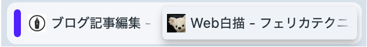
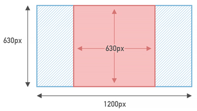

ファビコン
- ファビコンとは、「favorite icon（お気に入りのアイコン）」の略称
- ファビコンは、Web画面のタブなどに小さく表示されるアイコン
- ブラウザの初期設定では、「ファビコン」は必須となっています

作り方
- ico形式（拡張子は「.ico」）
- 「Favicon ジェネレーター」で作成
- 「256px X 256px」でPNG作成し、タッチアイコンにも利用する
favicon-generator.mintsu-dev.com
アップロード
- ルートにアップロード（index.htmlと同じ階層）
- index.htmlと同一階層にある場合は、ルートパス（スラッシュ/）は記述しなくてもOK
<link rel="icon" href="/favicon.ico">
<link rel="icon" href="favicon.ico">
タッチアイコン
- 「256px X 256px」のPNG画像をそのまま設定します
<link rel="apple-touch-icon" href="apple-touch-icon.png">
OGP（Open Graph Protocol）
- WebページのURLがX（旧Twitter）やFacebookなどのSNSに投稿されたときに、「タイトル」「画像」「説明文」などの補足情報（リンクの埋め込み情報）を表示するための仕組み
OGP画像
- 1200px X 630pxのサイズでOGP画像を作成
- 中央にWebサイトの必須情報を配置する
